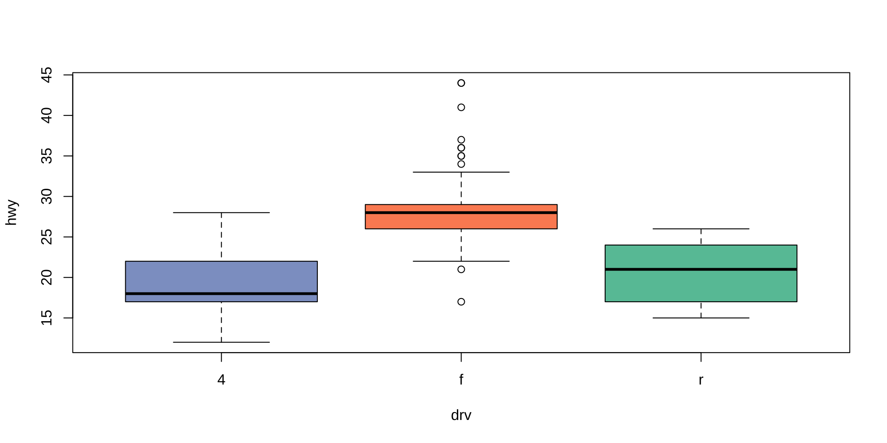
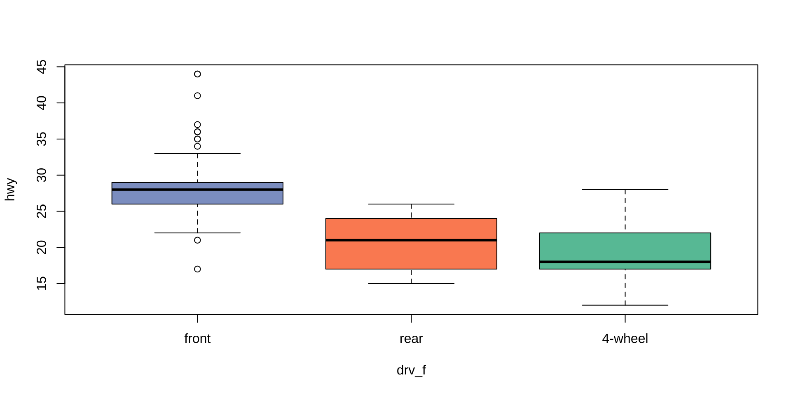
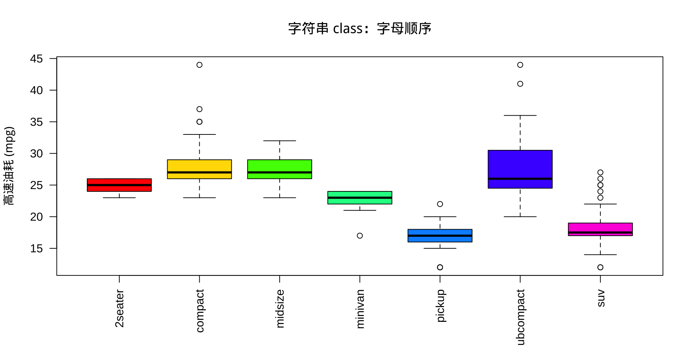
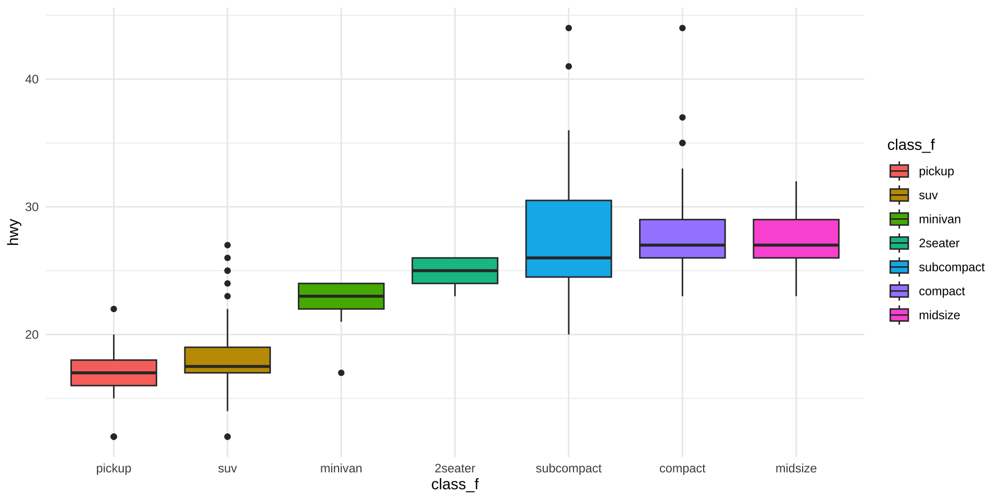
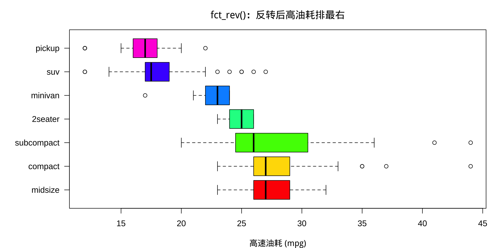
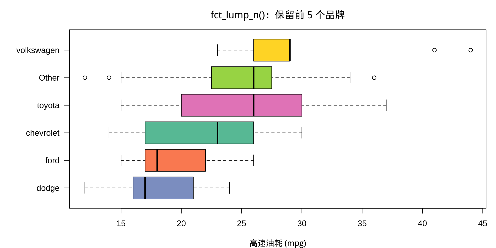

Factor的底层逻辑2026-05-11
请务必先运行下方代码
在尝试后续页面的任何示例代码之前，请确保您已经在自己的电脑上运行了这段安装R包的代码。
本节使用的数据: ggplot2::mpg
tibble [234 × 11] (S3: tbl_df/tbl/data.frame)
$ manufacturer: chr [1:234] "audi" "audi" "audi" "audi" ...
$ model : chr [1:234] "a4" "a4" "a4" "a4" ...
$ displ : num [1:234] 1.8 1.8 2 2 2.8 2.8 3.1 1.8 1.8 2 ...
$ year : int [1:234] 1999 1999 2008 2008 1999 1999 2008 1999 1999 2008 ...
$ cyl : int [1:234] 4 4 4 4 6 6 6 4 4 4 ...
$ trans : chr [1:234] "auto(l5)" "manual(m5)" "manual(m6)" "auto(av)" ...
$ drv : chr [1:234] "f" "f" "f" "f" ...
$ cty : int [1:234] 18 21 20 21 16 18 18 18 16 20 ...
$ hwy : int [1:234] 29 29 31 30 26 26 27 26 25 28 ...
$ fl : chr [1:234] "p" "p" "p" "p" ...
$ class : chr [1:234] "compact" "compact" "compact" "compact" ...| 字符串 character | 因子 factor | |
|---|---|---|
| 用途 | 自由文本、不固定的内容 | 有限的固定类别 |
| 图表类别顺序 | 按字母顺序，不可控 | 由 levels 定义，可控 |
| 回归分析 | 参照组不可控 | 可手动指定参照组 |
Tip
变量的取值是有限的固定类别，且需要控制类别顺序、
用于绘图或回归分析时，就应该转成因子。
✅ class（车型）：绘图时希望 x 轴按我们定义的顺序排列
✅ drv（驱动方式）：回归时需要明确指定哪种驱动方式为参照组
factor()levels =# 将 drv转为因子，按照油耗由低到高，手动指定levels 顺序和标签
mpg$drv_f <- factor(mpg$drv,levels = c("f", "r", "4"),
labels = c("front", "rear", "4-wheel"))
levels(mpg$drv_f)[1] "front" "rear" "4-wheel"
front rear 4-wheel
106 25 103 levels 控制类别的顺序，labels 控制类别的显示名称。

# drv 为字符串时：参照组由字母顺序决定
# "4" 字母排最前，自动成为参照组
model1 <- lm(hwy ~ drv, data = mpg)
summary(model1)$coefficients Estimate Std. Error t value Pr(>|t|)
(Intercept) 19.174757 0.4036737 47.500634 3.396345e-121
drvf 8.985620 0.5668272 15.852486 8.578919e-39
drvr 1.825243 0.9134093 1.998275 4.685929e-02字符串的levels的排序是由字母顺序决定的，参照组是不可控的。
# drv_f 为因子时：levels 第一个元素"前驱"为参照组
model2 <- lm(hwy ~ drv_f, data = mpg)
summary(model2)$coefficients Estimate Std. Error t value Pr(>|t|)
(Intercept) 28.160377 0.3979203 70.768881 1.416181e-158
drv_frear -7.160377 0.9108813 -7.860934 1.445327e-13
drv_f4-wheel -8.985620 0.5668272 -15.852486 8.578919e-39因子的levels可以自定义参照组。
系数: 后驱 / 四驱 相对于前驱的高速油耗差异（mpg）。
forcats 包forcats 是tidyverse中专门处理因子的包。
提供了一系列以 fct_ 开头的函数，比 base R 更简洁直观。
fct_reorder() — 按另一个变量的值排序字符串 class：x 轴按字母顺序

因子 class_f：x 轴按油耗中位数从低到高排列

fct_rev() — 反转类别顺序
fct_lump_n() — 合并低频类别# 按油耗中位数排序后绘图
mpg$mfr_lumped <- fct_reorder(mpg$mfr_lumped, mpg$hwy, median)
par(mar = c(4, 7, 3, 1))
boxplot(hwy ~ mfr_lumped, data = mpg,
main = "fct_lump_n()：保留前 5 个品牌",
xlab = "高速油耗 (mpg)",
ylab = "",
col = c("#8DA0CB","#FC8D62","#66C2A5",
"#E78AC3","#A6D854","#FFD92F"),
horizontal = TRUE,
las = 1)
| 函数 | 用途 |
|---|---|
factor(x, levels=..., labels=...) |
创建因子，指定顺序和标签 |
fct_relevel() |
手动将指定类别移到最前 |
fct_reorder() |
按另一个变量的值排序 |
fct_rev() |
反转类别顺序 |
fct_recode() |
重命名类别标签 |
fct_lump_n() |
保留前 n 个高频类别，其余合并为 Other |
fct_drop() |
删除无数据的类别 |
levels() |
查看类别 |
relevel() |
更改回归参照组（base R） |
2小时R入门 | © 2026 顶刊研习社, Li Zongzhang